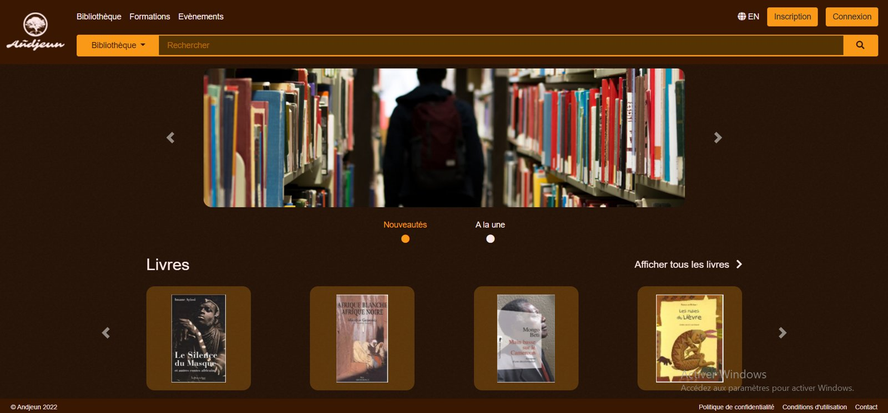
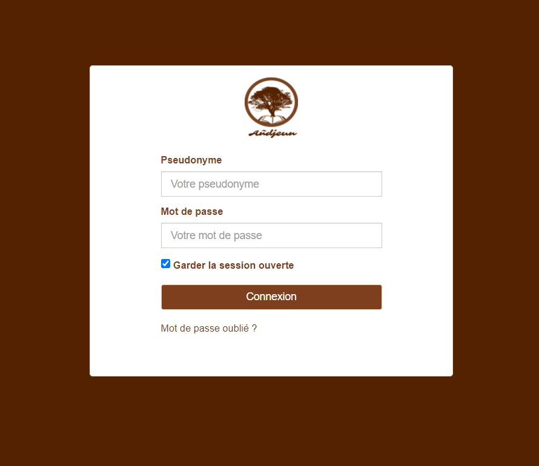
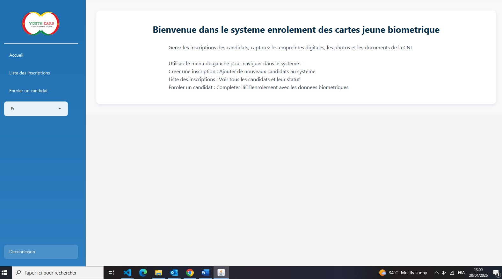
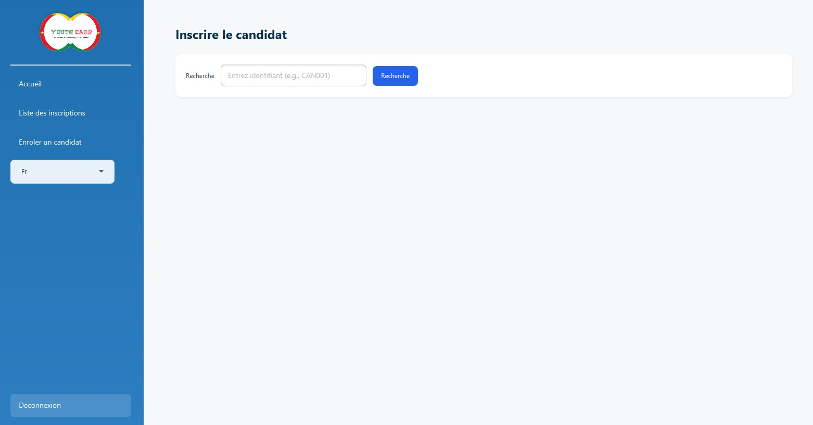

Yaoundé, Cameroun — disponible
Développeuse web full stack. Je conçois des applications et des API REST qui tiennent en production — du schéma de base de données à l'interface responsive.
{
"poste": "Développeuse web full stack",
"experience": "3 ans",
"formation": "BSc Software Engineering — CUIB",
"front": ["Vue.js", "AngularJS", "JavaScript", "CSS3"],
"back": ["Laravel", "Symfony", "Spring Boot"],
"donnees": ["PostgreSQL", "MySQL", "SQL"],
"mobile": ["Flutter", "Firebase"],
"integrations": ["Orange Money", "MTN MoMo", "lecteur biométrique"]
}
Profil
Trois ans de conception et de développement d'applications web performantes et responsives. Je travaille aussi bien le front (HTML5, CSS3, JavaScript, Vue.js, AngularJS) que le back (PHP Laravel/Symfony, Java Spring Boot), la modélisation et l'optimisation de bases relationnelles, et le développement, la documentation et le test d'API RESTful. J'intègre des maquettes UI/UX en interfaces fonctionnelles, je travaille en Git avec des déploiements automatisés via Jenkins, et je développe aussi en Flutter. Rigueur, tests et documentation font partie du livrable, pas de l'option.
Compétences
HTML5, CSS3, JavaScript, Vue.js, AngularJS. Intégration de maquettes UI/UX, interfaces responsives, attention à la performance et au SEO.
PHP (Laravel, Symfony), Java (Spring Boot). Architecture applicative et développement de services métier.
Conception, développement, documentation et test d'API RESTful (Postman). Intégration de services tiers : Orange Money, MTN Mobile Money, API dictionnaire, lecteur biométrique.
MySQL, PostgreSQL, SQL. Conception de schémas, optimisation de requêtes, scripts de migration et d'extraction, fiabilisation des données.
Flutter et Firebase pour des applications Android et iOS multiplateformes.
Git et workflows collaboratifs, Jenkins (CI/CD, test et pré-production), Postman, WampServer, tests fonctionnels et techniques, revues de code, documentation.
Gestion des utilisateurs et des droits d'accès, tests de sécurité d'accès.
Parcours
ITGSTORE · Développeuse full stack & analyste applicatif · Août 2024 — aujourd'hui
Plateforme de bibliothèque numérique conçue pour tenir sur quatre environnements distincts, du poste de développement jusqu'à la production sur Oracle Cloud Infrastructure, avec accès sécurisé par bastion.
Poste local
CentOS 7 · on-premise
CentOS 8 · OCI Compute
CentOS 8 · OCI Compute


ITGSTORE · Développeuse full stack & analyste applicatif · Août 2024 — aujourd'hui
preenrolement.servicescartejeuneonj.cm ↗
Refonte de la plateforme nationale de pré-enrôlement des jeunes pour l'Observatoire National de la Jeunesse : une application desktop de saisie biométrique pour les agents de terrain, adossée à un back-end Laravel/Spring Boot hébergé sur Oracle Cloud, et un serveur d'enrôlement public en Java/Tomcat.


ITGSTORE — Douala, Cameroun
House Innovation — Cameroun
Ejara — Cameroun
Digital House International — Cameroun
Formation
Catholic University Institute of Buea (CUIB) — 2019 à 2023.
Langues : français courant, anglais courant.
Contact
Disponible pour des missions full stack, du développement d'API ou du mobile. Je réponds sous 24 h.